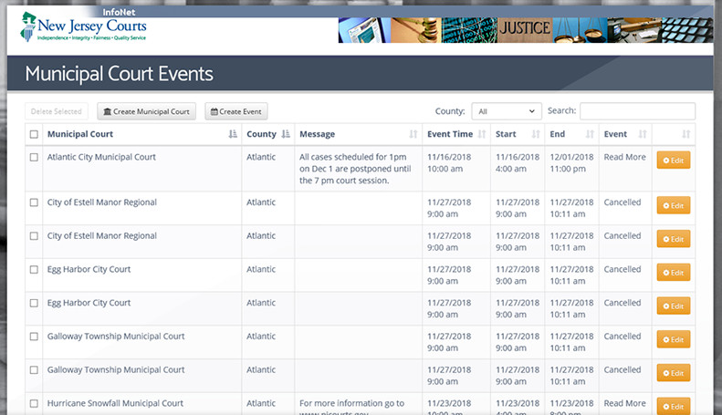
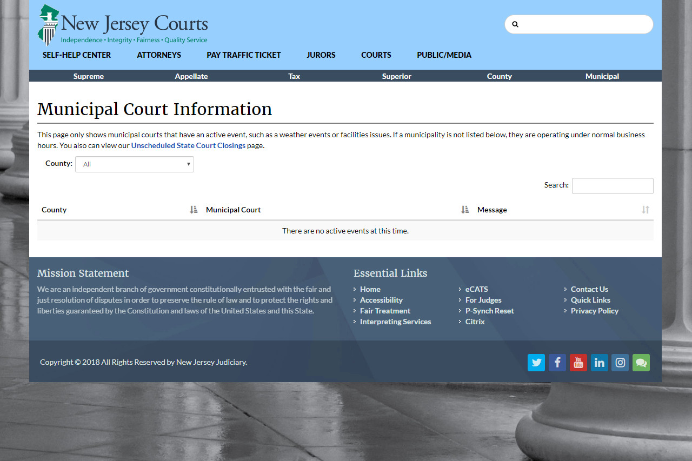
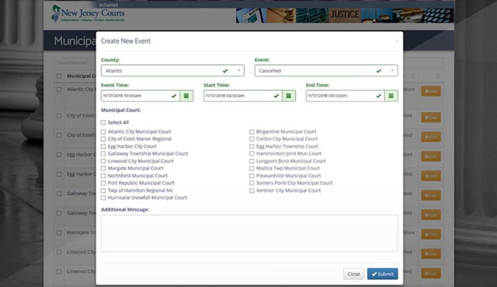

<div id="ajax-page" class="ajax-page-content">
        <div class="ajax-page-wrapper">
            <div class="ajax-page-nav">
                <div class="nav-item ajax-page-prev-next">
                    <a class="ajax-page-load" href="portfolio-2.html"><i class="zmdi zmdi-chevron-left"></i></a>
                    <a class="ajax-page-load" href="portfolio-4.html"><i class="zmdi zmdi-chevron-right"></i></a>
                </div>
                <div class="nav-item ajax-page-close-button">
                    <a id="ajax-page-close-button" href="#"><i class="zmdi zmdi-close"></i></a>
                </div>
            </div>
    
            <div class="ajax-page-title">
                <h1>NJCourts.gov Municipal Court Closings</h1>
            </div>
    
            <div class="row">
                <div class="col-sm-7 col-md-7 portfolio-block">
                    <div class="owl-carousel portfolio-page-carousel">
                        <div class="item">
                            
                        </div>
                        <div class="item">
                            
                        </div>
                        <div class="item">
                            
                        </div>
                    </div>
    
    
                    <!--
                    <div class="portfolio-page-image">
                        
                    </div>
                    -->
    
                    <script type="text/javascript">
                        jQuery(document).ready(function ($) {
    
                            $('.portfolio-page-carousel').owlCarousel({
                                smartSpeed: 1200,
                                items: 1,
                                loop: true,
                                dots: true,
                                nav: true,
                                navText: false,
                                margin: 10
                            });
    
                        });
                    </script>
                </div>
    
                <div class="col-sm-5 col-md-5 portfolio-block">
                    <!-- Project Description -->
                    <div class="block-title">
                        <h3>Description</h3>
                    </div>
                    <ul class="project-general-info">
                        <li>
                            <p><i class="fa fa-globe"></i> <a href="https://njcourts.gov/courts/closingsmuni.html"
                                    target="_blank">https://njcourts.gov/courts/closingsmuni.html</a></p>
                        </li>
                    </ul>
    
                    <p class="text-justify">This solution addressed the need for a state-wide municipal court closing alert system for the 500+ municipal courts. The system would allow the individual municipal post unique messages about the status of their courthouses in regards to whether or not they were closed or delayed. This system was used to inform the public, attorneys, and employees with up to date information about each municipality's courthouse throughout the state.<br><br>

                    The municipality's courthouse information was maintained through Sharepoint. Access was restricted to users through Sharepoint's permissions and Active Directory groups. <br><br>

                    Utilized a service to call a custom Python script (bundled into an executable) on a Windows 2012 server to query data in Sharepoint. It would check if there were any changes made to the status of the courthouses and, if any were changed, it would then write out the closing information to the webserver.
                    </p>
                    
                    <!-- /Project Description -->
    
                    <!-- Technology -->
                    <div class="tags-block">
                        <div class="block-title">
                            <h3>Technology</h3>
                        </div>
                        <ul class="tags">
                                <li><a>Python</a></li>
                                <li><a>SFTP</a></li>
                                <li><a>Windows</a></li>
                                <li><a>NSSM</a></li>
                                <li><a>Sharepoint</a></li>
                                <li><a>Active Directory</a></li>
                                <li><a>JSON</a></li>
                            </ul>
                    </div>
                    <!-- /Technology -->
                </div>
            </div>
        </div>
    </div>